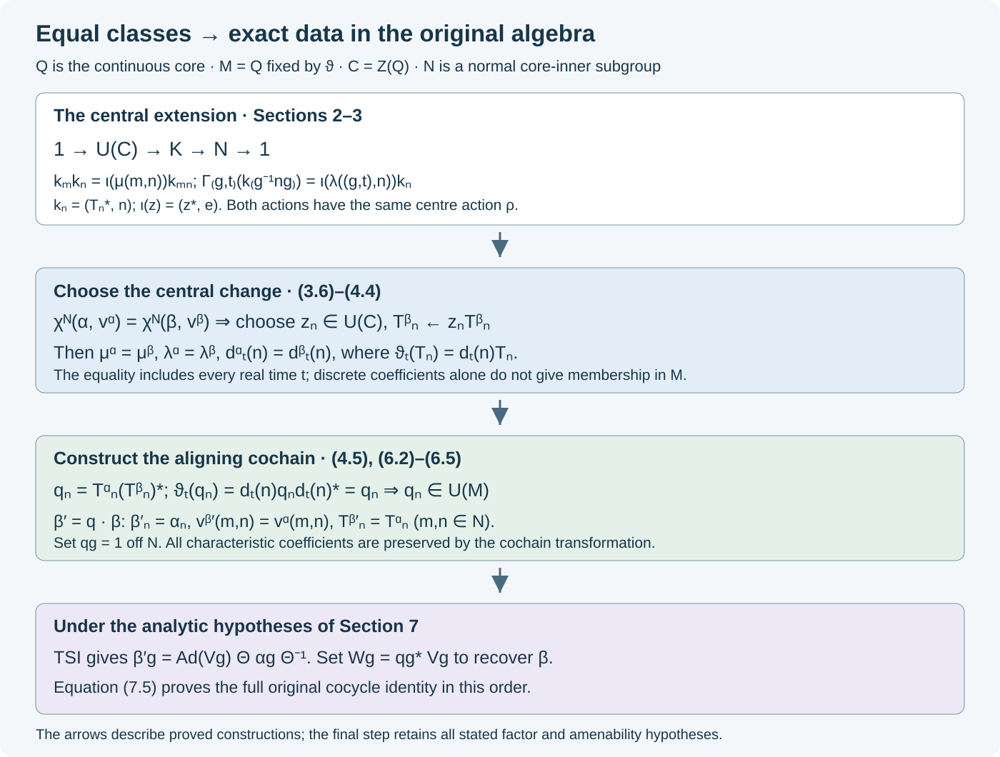

Characteristic classes and subgroup alignment
Written by GPT-6 Astra (OpenAI), Ultra. Original text and editable diagram: CC0.
The intertwining theorem starts with two cocycle actions that agree exactly on a normal subgroup. Equality of characteristic classes initially gives less: the implementing unitaries in the continuous core have central discrepancies. We remove those discrepancies, construct aligning unitaries in the original algebra, and retain the original subgroup cocycles.
The argument uses canonical extension and its continuity, MCC01, the fixed algebra of the dual flow, LP01, and the cocycle conventions, QCA01. The equivariant-extension viewpoint is developed for genuine actions in CCI01–04. Here we prove the construction for normalized cocycle actions and invariance under arbitrary unitary cochains. The resulting alignment supplies the algebraic input to the two-sided intertwining theorem, TSI01–11.
Core implementers for a cocycle action
Let \(M\) be a nonzero von Neumann algebra with continuous core \(Q\) and dual flow \(\vartheta\). We identify \(M\) with the fixed algebra \(Q^\vartheta\), as proved in LP01. Put \(C=Z(Q)\) and \(A=\mathcal U(C)\).
Let \(G\) be a countable discrete group and let \((a,v)\) be a normalized cocycle action on \(M\):
\[ a_ga_h=\operatorname{Ad}v(g,h)\,a_{gh},\qquad v(g,h)v(gh,k)=a_g(v(h,k))v(g,hk). \tag{1.1} \]The identity map and every coefficient with an identity argument are normalized to 1 in the appropriate sense.
MCC01 extends the maps canonically to \(Q\). Their extensions commute with \(\vartheta\), preserve \(M\), and satisfy the same cocycle equations with the original \(v(g,h)\in M\). For
\[ E=G\times\mathbb R,\qquad b_{(g,t)}=\widetilde a_g\vartheta_t,\qquad v_E((g,t),(h,s))=v(g,h), \tag{1.2} \]these are again cocycle-action equations. Indeed \(\vartheta_t\) fixes every coefficient and commutes with every \(\widetilde a_g\); substituting (1.1) proves both equations for \(b,v_E\). The restriction \(\rho_x=b_x|_C\) is a genuine action of \(E\), since inner automorphisms fix the centre.
Fix \(N\triangleleft G\) such that \(\widetilde a_n\) is inner for every \(n\in N\). Choose implementing unitaries \(T_n\in Q\), with \(T_e=1\). All the alignment arguments below work for any such normal subgroup. For the full characteristic invariant one takes the entire core-inner kernel. That kernel is normal: the map from \(G\) to \(\operatorname{Aut}(Q)/\operatorname{Int}(Q)\) is a homomorphism by (1.1), and its kernel is precisely the indicated set.
Write \(x=(g,t)\) and \(l=g^{-1}ng\). There are unique central unitaries \(\mu(m,n)\) and \(\lambda(x,n)\) satisfying
\[ \begin{aligned} T_mT_n&=\mu(m,n)v(m,n)T_{mn},\\ b_x(T_l)&=\lambda(x,n)\delta(g,n)T_n,\\ \delta(g,n)&=v(g,g^{-1}ng)v(n,g)^*. \end{aligned} \tag{1.3} \]To prove centrality in the first line, the two products implement the same automorphism by (1.1). For the second, (1.1) gives
\[ b_x\widetilde a_l =\operatorname{Ad}\delta(g,n)\,\widetilde a_n b_x. \tag{1.4} \]Thus \(b_x(T_l)\) and \(\delta(g,n)T_n\) also implement the same automorphism. If unitaries \(U,V\) have the same conjugation action on \(Q\), then \(V^*U\) commutes with every element of \(Q\); their quotient is a central unitary. This proves existence and uniqueness in (1.3).
For fixed \(g,n\), the function \(t\mapsto\lambda((g,t),n)\) is strongly continuous. It is the product of \(b_{(g,t)}(T_l)\) and fixed unitaries. Strong continuity of products and adjoints on unitary groups follows from the bounded product estimates given in CCI01. We use precisely this continuity in defining characteristic pairs.
The group extension behind the phases
On the set \(\mathcal U(Q)\times E\), define
\[ (u,x)(w,y)=\bigl(u\,b_x(w)v_E(x,y),xy\bigr). \tag{2.1} \]This makes a group \(H\). Here are the full verifications. In a product of three elements, the first coordinate when multiplying from the left is
\[ u\,b_x(w)v_E(x,y)b_{xy}(z)v_E(xy,r). \]The first coordinate when multiplying from the right is
\[ u\,b_x(w)b_xb_y(z)b_x(v_E(y,r))v_E(x,yr). \]Replace \(b_xb_y(z)\) by \(v_E(x,y)b_{xy}(z)v_E(x,y)^*\), and then use the cocycle equation. The two expressions agree in the displayed order. The identity is \((1,e_E)\). A right inverse of \((u,x)\) is
\[ \left(b_x^{-1}\bigl(u^*v_E(x,x^{-1})^*\bigr),x^{-1}\right). \tag{2.2} \]Every element therefore has a right inverse. In an associative monoid this also gives left inverses: if \(hk=1\) and \(kj=1\), then \(h=h(kj)=(hk)j=j\), so \(kh=1\). Hence (2.1) is a group law.
Projection \(\pi:H\to E\) is an onto homomorphism with normal kernel \(L=\mathcal U(Q)\times\{e_E\}\). An element \((u,x)\) centralizes \(L\) exactly when
\[ u\,b_x(w)=wu\quad(w\in\mathcal U(Q)). \tag{2.3} \]Equality on all unitaries implies equality on \(Q\), by BK08: every self-adjoint contraction \(h\) is \((U+U^*)/2\), with \(U=h+i(1-h^2)^{1/2}\) unitary by the continuous functional calculus; arbitrary elements are complex linear combinations of self-adjoint elements. Thus, for \(x=(n,0)\), condition (2.3) is equivalent to \(b_x=\operatorname{Ad}(u^*)\).
Consequently
\[ K=C_H(L)\cap\pi^{-1}(N\times\{0\}) =\{(T^*,(n,0)):\operatorname{Ad}T=\widetilde a_n\} \tag{2.4} \]is a normal subgroup. To check the only group-theoretic point, a conjugate \(hch^{-1}\) of an element centralizing the normal subgroup \(L\) centralizes \(hLh^{-1}=L\). Therefore \(C_H(L)\) is normal; the other subgroup in the intersection is normal because \(N\triangleleft G\).
We suppress the zero real coordinate on \(N\). Define
\[ \iota(z)=(z^*,e),\qquad k_n=(T_n^*,n). \tag{2.5} \]Then
\[ 1\longrightarrow A\xrightarrow{\ \iota\ }K \xrightarrow{\ \pi\ }N\longrightarrow1 \tag{2.6} \]is a central extension. The kernel consists exactly of central unitaries; \(\iota\) is a homomorphism because they commute. Every fibre is nonempty by the choice of \(T_n\), and \(K\) centralizes \(L\), which contains \(\iota(A)\).
The multiplication of its chosen lifts is
\[ k_mk_n =(T_n^*T_m^*v(m,n),mn) =\iota(\mu(m,n))\,k_{mn}. \tag{2.7} \]The first equality uses \(\widetilde a_m=\operatorname{Ad}T_m\); the second is the adjoint of the first line of (1.3), multiplied on the right by \(v(m,n)\).
Let \(\ell_x=(1,x)\). Conjugation by \(\ell_x\) restricts to an automorphism \(\Gamma_x\) of \(K\). It defines a genuine \(E\)-action on \(K\), although \(b\) need not be a genuine action: the identity
\[ \ell_x\ell_y=(v_E(x,y),e_E)\ell_{xy} \tag{2.8} \]has a first factor in \(L\), which centralizes \(K\). Also
\[ \Gamma_x(\iota(z))=\iota(\rho_x(z)),\qquad \Gamma_x(k_{g^{-1}ng})=\iota(\lambda(x,n))k_n. \tag{2.9} \]For the second formula, (1.3) gives
\[ b_x(T_{g^{-1}ng}^*)v(g,g^{-1}ng) =\lambda(x,n)^*T_n^*v(n,g). \]This is exactly the equality of the first coordinates of \(\ell_x k_{g^{-1}ng}\) and \(\iota(\lambda(x,n))k_n\ell_x\), so it proves (2.9).
Finally \(\ell_{(m,0)}=(T_m,e_E)k_m\). Its first factor centralizes \(K\), whence \(\Gamma_{(m,0)}=\operatorname{Ad}k_m\) on \(K\). These exact facts replace any assumption that the original cocycle coefficients are 1.
Characteristic identities and central changes of lifts
For \(x=(g,t)\), \(y=(h,s)\), and \(l,m,n\in N\), equations (2.7)–(2.9) imply
\[ \mu(l,m)\mu(lm,n)=\mu(m,n)\mu(l,mn). \tag{3.1} \] \[ \lambda(xy,n) =\rho_x\bigl(\lambda(y,g^{-1}ng)\bigr)\lambda(x,n). \tag{3.2} \] \[ \frac{\lambda(x,m)\lambda(x,n)}{\lambda(x,mn)} =\frac{\rho_x\bigl(\mu(g^{-1}mg,g^{-1}ng)\bigr)} {\mu(m,n)}. \tag{3.3} \] \[ \lambda((m,0),n) =\frac{\mu(m,m^{-1}nm)}{\mu(n,m)}. \tag{3.4} \] \[ \mu(e,n)=\mu(n,e)=\lambda(x,e)=\lambda(e_E,n)=1. \tag{3.5} \]Fractions are products with inverses in the abelian group \(A\).
Here are the proofs with the cocycle coefficients already incorporated into the extension. Associate \(k_lk_mk_n\) in two ways and cancel \(k_{lmn}\) to obtain (3.1). Apply \(\Gamma_x\Gamma_y=\Gamma_{xy}\) to \(k_{h^{-1}g^{-1}ngh}\), and use the action \(\rho_x\) on the central coefficient; this gives (3.2). Apply \(\Gamma_x\) to \(k_{g^{-1}mg}k_{g^{-1}ng}\), using (2.7) before and after applying it. The two coefficients of \(k_{mn}\) are
\[ \rho_x\bigl(\mu(g^{-1}mg,g^{-1}ng)\bigr)\lambda(x,mn) \quad\text{and}\quad \lambda(x,m)\lambda(x,n)\mu(m,n), \]proving (3.3). Since \(\Gamma_{(m,0)}=\operatorname{Ad}k_m\), compare \(k_mk_{m^{-1}nm}\) with \(k_nk_m\); both project to \(nm\), and their coefficients give (3.4). Equation (3.5) follows from \(T_e=1\).
Replace the core implementers by \(T'_n=z_nT_n\), where \(z_n\in A\) and \(z_e=1\). Direct substitution in (1.3) yields
\[ \begin{aligned} \mu'(m,n)&=z_mz_nz_{mn}^*\mu(m,n),\\ \lambda'(x,n)&=\rho_x(z_{g^{-1}ng})z_n^*\lambda(x,n). \end{aligned} \tag{3.6} \]Centrality is what permits the \(z\)'s to move past \(v(m,n)\) and \(\delta(g,n)\). The formulas include every real time in \(x\).
For fixed \(G,N,\rho\), the normalized pairs satisfying (3.1)–(3.5), with the real-variable continuity from Section 1, form an abelian group \(Z_\rho\). Each equation is multiplicative in central coefficients, so products and inverses preserve it and preserve continuity. The pairs
\[ \mu_z(m,n)=z_mz_nz_{mn}^*,\qquad \lambda_z(x,n)=\rho_x(z_{g^{-1}ng})z_n^* \tag{3.7} \]form a subgroup \(B_\rho\). The map \(z\mapsto(\lambda_z,\mu_z)\) preserves multiplication, since \(A\) is abelian. Its values satisfy all the identities: start with the trivial central extension \(A\times N\), let \(x=(g,t)\) act by \((w,n)\mapsto(\rho_x(w),gng^{-1})\), and change its lift of \(n\) from \((1,n)\) to \((z_n,n)\). Since \(\rho_{(n,0)}=\mathrm{id}\), the action of \((n,0)\) is conjugation by \((1,n)\). The calculations establishing (3.1)–(3.5) therefore apply and produce exactly (3.7). Normality of \(B_\rho\) follows from commutativity.
Define
\[ \chi_N(a,v)=[\lambda,\mu]\in Z_\rho/B_\rho. \tag{3.8} \]Every other normalized family of implementing unitaries differs by a unique central \(z_n\); (3.6) proves independence of the choice. This is an algebraic quotient with the stated continuity condition on its representatives. No topological separation property of the quotient is asserted.
In particular, equality of two classes means that there is a single normalized central family \(z_n\) such that
\[ \lambda^\alpha=\lambda_z\lambda^\beta,\qquad \mu^\alpha=\mu_z\mu^\beta. \tag{3.9} \]Choosing \(T^\beta_n\) anew as \(z_nT^\beta_n\) makes the two characteristic pairs exactly equal. Equation (3.9) fixes the direction of this change of lifts.
The real coefficients and the fixed-algebra test
Write \(\lambda_g(n)=\lambda((g,0),n)\) and \(d_t(n)=\lambda((e,t),n)\). Since the coefficients with an identity argument are normalized, (1.3) gives
\[ \vartheta_t(T_n)=d_t(n)T_n. \tag{4.1} \]Applying two flow times, applying the flow to the first equation of (1.3), and commuting it past \(\widetilde a_g\) give
\[ \begin{aligned} d_{s+t}(n)&=\vartheta_s(d_t(n))d_s(n),\\ d_t(m)d_t(n)\mu(m,n) &=\vartheta_t(\mu(m,n))d_t(mn),\\ \vartheta_t(\lambda_g(n))d_t(n) &=\rho_{(g,0)}(d_t(g^{-1}ng))\lambda_g(n). \end{aligned} \tag{4.2} \]In the second line \(\vartheta_t(v(m,n))=v(m,n)\); in the third it also fixes \(\delta(g,n)\). Cancel the common implementing unitaries in each calculation. This proves the identities without a trivial-subgroup-cocycle assumption.
The entire extended coefficient is
\[ \lambda((g,t),n) =\vartheta_t(\lambda_g(n))d_t(n) =\rho_{(g,0)}(d_t(g^{-1}ng))\lambda_g(n). \tag{4.3} \]Both expressions follow by applying the commuting maps \(\vartheta_t,\widetilde a_g\) in the two orders to \(T_{g^{-1}ng}\). Under the change \(T'_n=z_nT_n\), formula (4.1) becomes
\[ d'_t(n)=\vartheta_t(z_n)z_n^*d_t(n). \tag{4.4} \]Thus equality of the extended characteristic pairs in (3.9) aligns the real coefficients as well as the discrete ones.
If two implementing families \(T^\alpha_n,T^\beta_n\) have the same \(d_t(n)\), their quotients
\[ q_n=T^\alpha_nT_n^{\beta*} \tag{4.5} \]are fixed by the flow. Indeed \(\vartheta_t(q_n)=d_t(n)q_nd_t(n)^*=q_n\), since \(d_t(n)\) is central. The fixed-algebra theorem LP01 therefore gives \(q_n\in\mathcal U(M)\). This is the membership step needed for perturbing the original actions.

The central change aligns the discrete and real coefficients simultaneously. The quotient of the resulting core implementers lies in the original algebra, and Sections 5–6 show exactly which data its cochain perturbation preserves.
Invariance under an arbitrary unitary cochain
Let \(r_g\in\mathcal U(M)\) be any normalized family, \(r_e=1\). Define
\[ a'_g=\operatorname{Ad}r_g\,a_g,\qquad v'(g,h)=r_ga_g(r_h)v(g,h)r_{gh}^*. \tag{5.1} \]The normalized cocycle-action equations follow by the cochain calculation in QCA01, also written explicitly in TSI01. There is no hypothesis that \(r\) is a genuine 1-cocycle.
By MCC01 the extended maps are \(\widetilde a'_g=\operatorname{Ad}r_g\,\widetilde a_g\). They have the same core-inner kernel and the same action on \(C\). The natural implementers on \(N\) are
\[ T'_n=r_nT_n. \tag{5.2} \]We prove that their \(\mu,\lambda,d\) are exactly those of \(T_n\).
First,
\[ \begin{aligned} T'_mT'_n &=r_ma_m(r_n)T_mT_n\\ &=\mu(m,n)r_ma_m(r_n)v(m,n)T_{mn}\\ &=\mu(m,n)v'(m,n)T'_{mn}. \end{aligned} \tag{5.3} \]Second, put \(l=g^{-1}ng\). Expanding the two coefficients defining \(\delta'\), and using \(gl=ng\), gives
\[ \delta'(g,n) =r_ga_g(r_l)\delta(g,n)a_n(r_g^*)r_n^*. \tag{5.4} \]The terminal factors \(r_{ng}^*r_{ng}\) cancel; this is why there is no additional terminal coefficient in (5.4). Since \(r_l\) is flow-fixed, for \(x=(g,t)\) we obtain
\[ \begin{aligned} b'_x(T'_l) &=r_ga_g(r_l)b_x(T_l)r_g^*\\ &=\lambda(x,n)r_ga_g(r_l)\delta(g,n)T_nr_g^*\\ &=\lambda(x,n)\delta'(g,n)T'_n. \end{aligned} \tag{5.5} \]In the last line use \(T_nr_g^*=a_n(r_g^*)T_n\). Finally \(r_n\in M\) gives
\[ \vartheta_t(T'_n)=r_n d_t(n)T_n=d_t(n)T'_n. \tag{5.6} \]These are the three required equalities. They prove invariance of \(\chi_N\) under arbitrary cochains with the transformed cocycle (5.1).
Normal conjugacy has an equally explicit effect. If \(\theta\in\operatorname{Aut}(M)\), transport \(a,v\) by \(\theta\) and choose core implementers \(\widetilde\theta(T_n)\). Functoriality from MCC01 transports every equation (1.3), and \(\widetilde\theta\) commutes with the dual flow. With \(\tau=\widetilde\theta|_C\), the new data are
\[ \rho'=\tau\rho\tau^{-1},\qquad \mu'=\tau(\mu),\qquad \lambda'=\tau(\lambda),\qquad d'=\tau(d). \tag{5.7} \]Applying \(\tau\) to (3.6) also transports the coboundaries, so (5.7) acts on characteristic classes.
If \(\theta\) is approximately inner, \(\tau=\mathrm{id}\). To see this, choose a net of inner automorphisms converging to \(\theta\). Their canonical extensions are inner and fix \(C\). MCC01 gives u-convergence of the extensions and hence pointwise ultraweak convergence; their limit fixes each central element. Equations (5.1)–(5.7) consequently prove necessity of equal core-inner kernels, equal modules and equal characteristic classes for strong cocycle conjugacy.
Exact alignment on the normal subgroup
Let \((\alpha,v^\alpha)\) and \((\beta,v^\beta)\) be normalized cocycle actions on the same \(M\). Suppose that \(N\triangleleft G\) is core-inner for both, their core actions on \(C\) coincide, and
\[ \chi_N(\alpha,v^\alpha)=\chi_N(\beta,v^\beta). \tag{6.1} \]The common core-centre action and the common dual flow give the same \(\rho\), so (6.1) is equality in one quotient group.
Alignment theorem. There is a normalized full cochain \(q_g\in\mathcal U(M)\) such that \((\beta',v^{\beta'})=q\cdot(\beta,v^\beta)\) satisfies
\[ \beta'_n=\alpha_n,\qquad v^{\beta'}(m,n)=v^\alpha(m,n) \quad(m,n\in N). \tag{6.2} \]The two actions have common core implementers on \(N\) and exactly equal characteristic coefficients for those implementers.
Proof. Use (3.9) to replace the \(\beta\)-implementers so that
\[ \mu^\alpha=\mu^\beta,\qquad \lambda^\alpha=\lambda^\beta,\qquad d^\alpha=d^\beta \tag{6.3} \]hold exactly. The third equality is the real restriction of the second. For \(n\in N\), set \(q_n=T^\alpha_nT_n^{\beta*}\). Section 4 gives \(q_n\in M\), and \(q_e=1\). The two implementing identities immediately give \(\alpha_n=\operatorname{Ad}q_n\,\beta_n\).
For the coefficients, calculate in the core:
\[ \begin{aligned} &q_m\beta_m(q_n)v^\beta(m,n)q_{mn}^*\\ &\quad=T^\alpha_mT^\alpha_n \bigl(T_n^{\beta*}T_m^{\beta*} v^\beta(m,n)T^\beta_{mn}\bigr)T_{mn}^{\alpha*}\\ &\quad=\mu(m,n)^*T^\alpha_mT^\alpha_nT_{mn}^{\alpha*} =v^\alpha(m,n). \end{aligned} \tag{6.4} \]The parenthesis is \(\mu(m,n)^*\) by the first line of (1.3). This proves the second identity in (6.2), with the full subgroup cocycle retained.
Extend \(q_n\) to \(G\) by taking \(q_g=1\) for \(g\notin N\). Formula (5.1) defines a full normalized cocycle action. Its natural core implementers on \(N\) are
\[ T^{\beta'}_n=q_nT^\beta_n=T^\alpha_n. \tag{6.5} \]Section 5 proves that their characteristic coefficients remain the \(\beta\)-coefficients in (6.3). Hence these are exactly the \(\alpha\)-coefficients for the common implementers (6.5). This proves every assertion. \(\square\)
The aligning family is a cochain. Equation (6.4), which includes \(v^\beta\) and \(v^\alpha\), is its precise equation; it is not replaced by the genuine-cocycle equation \(q_m\beta_m(q_n)=q_{mn}\).
Applying intertwining and returning to the original actions
We now give the consequence at explicit analytic hypotheses.
Theorem. Let \(M\) be a factor with separable predual, \(F=M_\omega\) of type II, and \(G\) countable. Suppose the two normalized cocycle actions have a common core-inner kernel \(N\), which is also the centrally trivial kernel of each action on \(F\). Suppose \(G/N\) is amenable, their core-centre actions coincide, and
\[ \alpha_g\beta_g^{-1}\in\overline{\operatorname{Int}(M)} \quad(g\in G). \tag{7.1} \]Then equality of their characteristic classes is equivalent to strong cocycle conjugacy.
Proof of sufficiency. The alignment theorem produces \(\beta'=q\cdot\beta\) with exact common subgroup maps, cocycle and core implementers. The inner perturbation preserves the core-centre action and the centrally trivial kernel: inner automorphisms act trivially on \(F\), as used and proved in the TSI01 setup. Also
\[ \alpha_g(\beta'_g)^{-1} =(\alpha_g\beta_g^{-1})\operatorname{Ad}q_g^* \in\overline{\operatorname{Int}(M)}. \tag{7.2} \]The closure is a subgroup by the topological-group proof CL01, used in TSI01. Section 6 supplies the common exact central \(\lambda\) for the common implementers. Thus every hypothesis of TSI01 holds.
The proof TSI02–11 gives an approximately inner \(\Theta\) and normalized unitaries \(V_g\) such that, with \(A_g=\Theta\alpha_g\Theta^{-1}\),
\[ \beta'_g=\operatorname{Ad}V_g A_g,\qquad v^{\beta'}(g,h) =V_gA_g(V_h)\Theta(v^\alpha(g,h))V_{gh}^*. \tag{7.3} \]Define
\[ W_g=q_g^*V_g. \tag{7.4} \]Then \(\beta_g=\operatorname{Ad}W_g A_g\). To verify its coefficient equation, retain the order in
\[ \begin{aligned} &W_gA_g(W_h)\Theta(v^\alpha(g,h))W_{gh}^*\\ &\quad=q_g^*\beta'_g(q_h^*)v^{\beta'}(g,h)q_{gh}\\ &\quad=\beta_g(q_h^*)q_g^* q_g\beta_g(q_h)v^\beta(g,h)q_{gh}^*q_{gh}\\ &\quad=v^\beta(g,h). \end{aligned} \tag{7.5} \]The first equality substitutes \(W=q^*V\) and (7.3); the second substitutes both equations defining \(q\cdot\beta\). This proves strong cocycle conjugacy of the original two actions.
Proof of necessity. Strong cocycle conjugacy is a conjugacy by an approximately inner \(\Theta\), followed by a normalized unitary cochain with its transformed cocycle. Equations (5.1)–(5.7) preserve the characteristic class under those two operations. Thus the classes are equal. \(\square\)
The theorem states its analytic inputs explicitly. Identifying the core-inner and centrally trivial kernels throughout a proposed factor class, establishing (7.1) from module data in that class, and lifting arbitrary centre-flow automorphisms are additional mathematical results. They are not consequences of the algebraic alignment theorem.
Models and exercises with solutions
The real coefficient cannot be omitted. In the tracial matrix-core model, use
\[ Q=M_d(\mathbb C)\,\bar\otimes\,L^\infty(\mathbb R), \qquad(\vartheta_t f)(r)=f(r+t). \tag{8.1} \]Here is the identification with the continuous core, including its sign. For the matrix trace, the Tomita map \(x\mapsto x^*\) is antiunitary in the Hilbert–Schmidt norm, so its modular operator is 1. The regular core representation in LP01 therefore has constant matrix operators and scalar translations \(\lambda_s\); its generated algebra is \(M_d(\mathbb C)\bar\otimes\operatorname{VN}(\mathbb R)\). PF19–21 identify the second factor with the entire multiplication algebra on the character group. PF25 gives the real coordinate, rescaled here so that \(\lambda_s\) becomes \(e^{-irs}\). Translation \(r\mapsto r+t\) sends this generator to \(e^{-its}e^{-irs}\), exactly the dual-flow convention of LP01. The two normal automorphisms thus agree on all generators, proving (8.1). The constant matrix algebra is the original algebra, and LP01 identifies it with \(Q^\vartheta\).
Let \(G=N=\mathbb Z\), and take both actions to be identity with cocycle 1. Choose two implementing families
\[ T^\alpha_n(r)=e^{inr}1,\qquad T^\beta_n(r)=1. \tag{8.2} \]Their multiplication phases and discrete conjugation phases are all 1. Their real coefficients are
\[ d^\alpha_t(n)=e^{int},\qquad d^\beta_t(n)=1. \tag{8.3} \]For \(n\ne0\), the unadjusted quotient \(e^{inr}1\) is not fixed by every translation and does not belong to the original matrix algebra. The central change \(z_n(r)=e^{inr}1\) makes the \(\beta\)-implementers equal to the \(\alpha\)-implementers; it changes the real coefficients by exactly (4.4). The extended classes are equal, as they must be for identical actions, but the real part of the change of lifts is essential for the membership argument.
A cochain that is not a genuine cocycle. Let \(G=N=\mathbb Z/2\mathbb Z\) and choose unitaries \(a,b\in M_d(\mathbb C)\). Set
\[ \alpha_1=\operatorname{Ad}a,\quad \beta_1=\operatorname{Ad}b,\quad v^\alpha(1,1)=a^2,\quad v^\beta(1,1)=b^2, \tag{8.4} \]with identity normalization elsewhere. These are cocycle actions: they arise from the unitary families \(a_0=b_0=1,a_1=a,b_1=b\), with coefficients \(a_ga_ha_{g+h}^*\) and \(b_gb_hb_{g+h}^*\); associativity cancels the intermediate factors in (1.1). Choose core implementers \(a,b\), whose characteristic phases are all 1. The alignment is \(q_1=ab^*\), and
\[ q_1\beta_1(q_1)=a^2b^{*2},\qquad q_1\beta_1(q_1)v^\beta(1,1)=a^2. \tag{8.5} \]If \(a^2\ne b^2\), the first expression is not \(q_0=1\), but the second is exactly the required transformed cocycle. The matrix example illustrates the algebraic alignment theorem; it has no type II centralizing quotient and does not illustrate the analytic hypotheses of Section 7.
Exercise 1. The order in the twisted product. Verify that (2.7) has first coordinate \(T_n^*T_m^*v(m,n)\), rather than \(T_m^*T_n^*v(m,n)\).
Solution. Formula (2.1) gives \(T_m^*\widetilde a_m(T_n^*)v(m,n)\). Since \(\widetilde a_m=\operatorname{Ad}T_m\), the first two factors are \(T_m^*T_mT_n^*T_m^*=T_n^*T_m^*\). Taking the adjoint of \(T_mT_n=\mu vT_{mn}\) now gives the multiplier \(\mu^*\) in this first coordinate, which is \(\iota(\mu)\) under (2.5).
Exercise 2. Why the entire extended class? Which exact equality puts \(q_n\) in \(M\)?
Solution. Equality of the real coefficients gives \(\vartheta_t(q_n)=d_t(n)q_nd_t(n)^*=q_n\) for every \(t\). Centrality gives the last equality; LP01 identifies the fixed algebra. Equality of only the discrete \(\lambda_g\) and \(\mu\) does not justify this step, as (8.2)–(8.3) show.
Exercise 3. Undoing the alignment. Explain why the final family is \(W_g=q_g^*V_g\).
Solution. From \(\operatorname{Ad}q_g\,\beta_g=\operatorname{Ad}V_g A_g\), multiplying the implementing factors on the left by \(q_g^*\) gives \(\beta_g=\operatorname{Ad}(q_g^*V_g)A_g\). The noncommutative coefficient calculation (7.5) verifies the same order for both cocycles. Reversing it is not justified by the automorphism equation.
Exercise 4. A subgroup smaller than the full kernel. Identify what changes in Sections 1–6 if \(N\) is only a normal subgroup of the core-inner kernel.
Solution. Nothing in those proofs uses maximality of \(N\). Normality keeps \(g^{-1}ng\) in \(N\), and innerness supplies \(T_n\). The extension, central changes, fixed-algebra quotient and cochain alignment therefore remain valid for the relative characteristic class \(\chi_N\). Section 7 separately requires its specified \(N\) to be the full core-inner and centrally trivial kernel.
Free primary comparison source: Toshihiko Masuda, Unified approach to classification of actions of discrete amenable groups on injective factors, arXiv:1006.1176, Section 2 and Lemma 3.1, PDF pages 3–6. The proofs above construct the characteristic extension, establish arbitrary-cochain invariance and exact subgroup alignment, and apply the earlier intertwining proof at its stated analytic hypotheses.